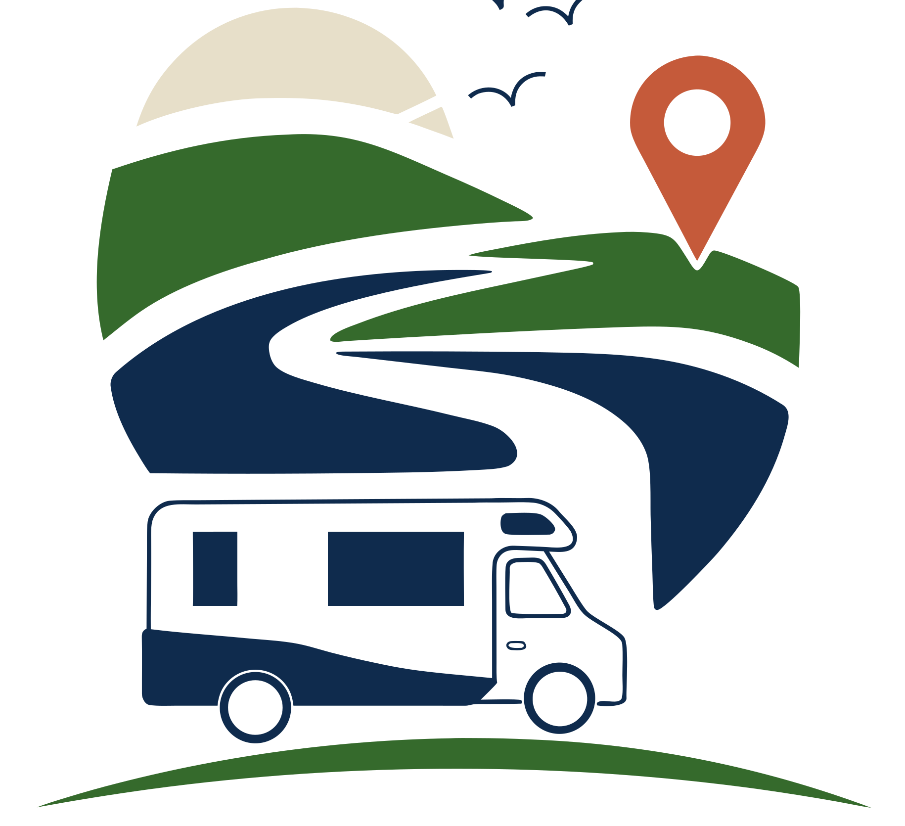

180 km
Ruta del Vino
Bodegas, gastronomía y paisaje productivo
SUR ENRUTA
Explorá. Conectá. Viví.

Área de servicio
Ruta 9, Km 264 — Rocha
Zona habilitada para estacionar y descansar, con acceso a agua potable y descarga de aguas grises.
Cerca tuyo
Rutas destacadas
Rutastemáticas
Ruta del Vino
Bodegas, gastronomía y paisaje productivo
Ruta Oceánica
Costa, pueblos, mar y naturaleza
Ruta Termal
Bienestar, descanso y servicios
Ruta Rural
Estancias, productores y vida de campo
Ruta Patrimonial y Cultural
Historia, identidad y pueblos
Ruta de Naturaleza y Aventura
Sierras, lagunas y aire libre
Martín Viera
Viajero desde 2023
✓ Viajero Responsable